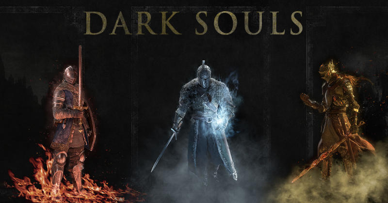
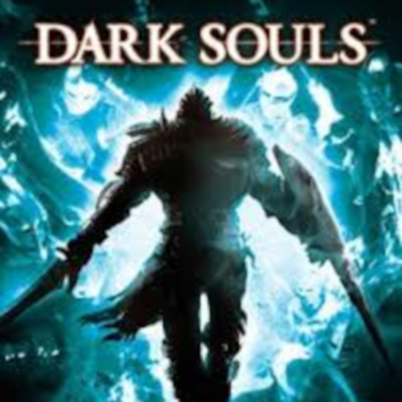
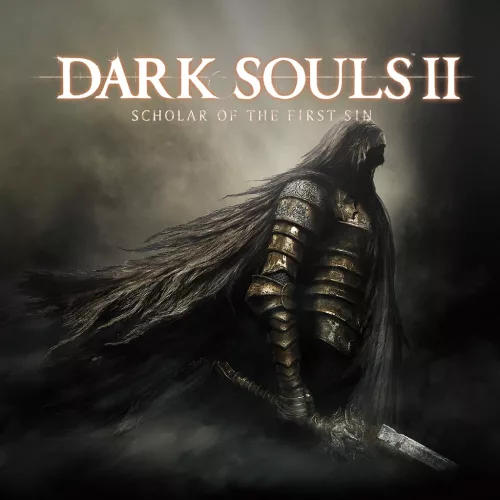
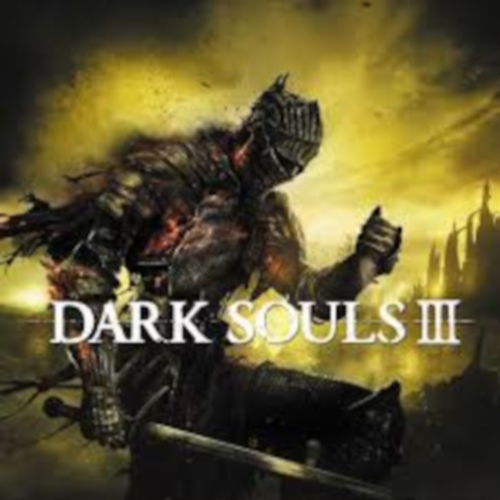

This is Dark Souls!
Dark souls are a trilogy of games made by Hidetaka Miyazaki and they are old game but very popular as they are really hard game

Info about these games

The game takes place in the kingdom of Lordran, where players assume the role
of a cursed undead character who escapes from the Northern Undead Asylum and
begins a pilgrimage to discover the fate of their kind.

The second installment of the Dark Souls series, it is set in the kingdom of
Drangleic and follows an undead traveler searching for a cure to their
affliction.

Dark Souls 3 takes place in a transitory place, revolving around the first
flame and the cycle of fire and dark. You play as a protagonist whose goal is
to find and return the five Lords of Cinder to their thrones at Firelink
Shrine in order to link the flame again.
Dark Souls is in some ways an incomplete game, and I like to think that it has been completed by players, by their discoveries, as they moved along.
Buy these great games!
If you are intrested click on this button to check out these games.